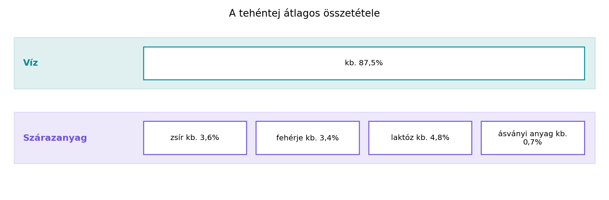

Egy pékségben a hajnali kalácsgyártás során a receptúra folyékony tejet ír elő, de a raktárban csak sovány tejpor van. A péknek el kell döntenie, mennyi tejport és vizet használjon, hogy a tészta ne legyen se túl kemény, se túl lágy, és a kalács héja szép aranybarna, a bélzete pedig puha maradjon. Ugyanaznap a pultban egy vásárló rákérdez, hogy a kifli tartalmaz-e tejet, mert a gyermeke tejfehérje-allergiás. A tej és tejtermékek tehát egyszerre befolyásolják a termék technológiai viselkedését, érzékszervi minőségét, tárolhatóságát és a fogyasztói tájékoztatást.
A tehéntej nagyrészt víz, benne oldott vagy finoman eloszlatott alkotókkal. Az alábbi rétegábra a tej átlagos összetételét mutatja tanulási példaként.

A pék szempontjából nem elég annyit tudni, hogy „tej = folyadék”. A tejben lévő laktóz a héj barnulását segíti, a tejzsír és a tejfehérje a bélzet puhaságát és az ízt alakítja, a víz pedig a tészta állagát szabályozza.
Definíció.
A sütőiparban tej alatt leggyakrabban pasztőrözött tehéntejet értünk. A
tej vizes közeg, amelyben tejzsír, tejfehérje (főként kazein és
savófehérje), tejcukor (laktóz), ásványi anyagok, vitaminok és egyéb
anyagok találhatók. A sütőipari szempontból legfontosabb jellemzője a
szárazanyag-tartalom, mert ez határozza meg, mennyi vizet visz a
tésztába, és mennyi íz-, szín- és állományalakító anyagot ad.
Definíció.
A tejpor a tej vízének elpárologtatásával készült, por alakú termék. Két
alapvető fajtája:
Definíció.
A tejtermékek közé tartozik az író, a tejsavó, a túró és a tejföl
is.
Megjegyzés.
A pékségi receptekben a „tej” szó nem mindig egyértelmű. Ha a
technológiai lap nem pontosít, meg kell kérdezni, hogy folyékony tej,
vízzel visszakevert tejpor, író vagy valamilyen tejtermék-e. Az eltérő
szárazanyag- és zsírtartalom miatt ugyanis más lesz a tésztakihozatal és
a termék minősége.
A tej hatása a sütőipari termékre három fő területen érvényesül: a héjszínen, a bélzeten és az ízen.
Héjszín.
A tejben lévő laktóz redukáló cukor. Sütés közben a laktóz az
aminosavakkal Maillard-reakcióba lép, és barnább, vörösesebb héjat ad.
Emiatt a tejes tészták sütési hőmérsékletét gyakran kissé alacsonyabbra
állítják, vagy a sütési időt rövidítik, különben a héj hamar túlbarnul.
A héjszín tehát a laktóz barnító hatásának következménye.
Bélzet.
A tejzsír és a tejfehérje puhább, finomabb bélzetet ad. A zsír részben
bevonja a keményítőszemcséket és a sikérszálakat, ezért a bélzet lazább,
vékonyabb falú, puhább. A tejfehérjék javítják a tápértéket, és
vízmegkötő képességükkel lassítják a termék öregedését. A tejben lévő
sók és fehérjék pufferhatása pedig tompítja a tészta savasodását, ezért
az erjedés és a kelés lefolyása is módosulhat.
Íz.
A tej enyhén édeskés, tejszínes ízt ad a terméknek. A kalács, a briós, a
tejes kifli jellegzetes aromája a tej alkotóiból és a sütés közben
keletkező reakciótermékekből származik.
A sütőipari tészta szempontjából a tej egyúttal folyadék is, ezért a tejpor használatakor a tejporhoz vizet kell adni, különben a tészta túl kemény lesz. A tejet általában a dagasztóvíz egy részének helyettesítésére használják. Ha a recept például 100 kg liszthez 55 kg vizet ír elő, és 4 kg sovány tejport adunk, akkor a tejpor vízmegkötése miatt kb. a tejpor tömegének megfelelő többletvizet kell bekalkulálni (kb. 4 kg, tanulási érték; ellenőrizendő: próbadagasztás, gyártói adatlap). A tej-egyenértékhez tartozó vizet viszont nem adjuk a recept vizéhez: az a dagasztóvíz része.
A tej és tejpor közötti átszámítás alapja a szárazanyagmérleg. A folyékony tej bizonyos szárazanyag-tartalmú; a tejpor majdnem száraz, ezért a kívánt tej szárazanyag-mennyiségét a tejpor viszi be, a fennmaradó részt pedig vízzel pótoljuk.
Jelölések.
| Mennyiség | Jel | Mértékegység |
|---|---|---|
| Kívánt folyékony tej tömege | kg | |
| Szükséges tejpor tömege | kg | |
| Hozzáadandó víz tömege | kg | |
| Folyékony tej szárazanyag-tartalma | tömegtört (pl. 0,09 sovány tejre) | |
| Tejpor szárazanyag-tartalma | tömegtört (pl. 0,96) |
Összefüggés.
A szárazanyag-mérleg:
Ebből a szükséges tejpor:
A hozzáadandó víz:
A képletben a szárazanyag-tartalmat tömegtörtben kell megadni: ha a tej 9% szárazanyagot tartalmaz, akkor . A százalékot osztani kell 100-zal.
Melyik szárazanyagot számoljuk? A teljes tej szárazanyaga kb. 12–12,5% (a rétegábra szerint; ebből kb. 3,5% zsír), a zsírmentes szárazanyag kb. 8,5–9% (tanulási értékek; ellenőrizendő: termékleírás). Sovány tejporral a zsírmentes szárazanyagot pótoljuk, ezért a példákban sovány tejjel számolunk (kb. 9%). Ha a termékhez teljes tej zsírja is kell, a hiányzó tejzsírt (kb. 3,5%) vajjal vagy más zsiradékkal pótoljuk, és a zsiradék-mennyiségből levonjuk.
1. példa – Folyékony tej helyettesítése sovány
tejporral.
A recept 25 kg folyékony sovány tejet ír elő, amelynek
szárazanyag-tartalma 9% (tanulási érték). A raktárban sovány tejpor van
96% szárazanyag-tartalommal. Mennyi tejpor és víz szükséges?
Adott:
Keresett: és .
Képlet:
Behelyettesítés:
Víz:
Ellenőrzés:
A 2,344 kg tejpor szárazanyaga
kg. A kívánt 25 kg tej szárazanyaga is
kg. A két mennyiség egyezik, tehát a számítás helyes. A tejpor és a víz
együttes tömege 25 kg. Eredmény: kb. 2,344 kg sovány
tejpor + 22,656 kg víz.
2. példa – Rendelkezésre álló tejporból készíthető
tej.
A pékségben 15 kg sovány tejport akarnak felhasználni. Hány kg 9%
szárazanyag-tartalmú sovány tejet lehet belőle visszaoldani, és mennyi
víz kell hozzá?
Adott:
Keresett: és .
A szárazanyag mennyisége:
A készítendő tej tömege:
Víz:
Ellenőrzés:
160 kg tej 9%-a 14,4 kg szárazanyag, ami a 15 kg tejpor 96%-ával
egyenlő. Eredmény: 15 kg sovány tejporból 160 kg tej
keverhető 145 kg vízzel.
3. példa – Tejpor adagolása a tésztareceptben.
A technológiai lap 100 kg lisztre 4 kg sovány tejport ír elő. A tészta
alapvíz-szükséglete tej nélkül 60 kg lenne. A 4 kg tejpor hány kg
folyékony tejnek felel meg, és mennyi vizet kell hozzáadni a
tésztához?
A 4 kg tejpor szárazanyaga:
Ha 9% szárazanyag-tartalmú sovány tejnek feleltetjük meg:
A tej-egyenérték visszaoldásához szükséges víz:
Ez a 38,7 kg víz nem adódik hozzá a 60 kg alapvízhez: a tej a dagasztóvíz egy részét helyettesíti, tehát a 60 kg-os folyadékigényen belül marad (a maradék kb. 21 kg a tényleges víz és az egyéb folyadék). A tejpor saját vízmegkötése miatt a dagasztóvizet kb. 4 kg-mal növeljük (tanulási érték; ellenőrizendő: próbadagasztás, gyártói adatlap), így összesen kb. 64 kg folyadék, TA ≈ 164. A gyakorlatban a mennyiséget a tészta állaga alapján finomítják. Eredmény: 4 kg sovány tejpor kb. 42,7 kg sovány tejnek felel meg; az ehhez tartozó kb. 38,7 kg víz a dagasztóvíz része, a teljes folyadék kb. 64 kg.
Higiénia.
A folyékony tej és a friss tejtermékek romlandók. A pasztőrözött tejet
hűtőben, a pékség HACCP-tervében megadott hőmérsékleten kell tárolni;
jellemző cél 0–5 °C, de a pontos határt az üzemi terv rögzíti
(ellenőrizendő). A felbontott tejet, írót, savót, túrót, tejfölt fedve,
külön polcon, a nyers hústól és tojástól elkülönítve kell tartani. A
tejport hűvös, száraz, jól zárható edényben vagy eredeti, visszazárt
csomagolásban tároljuk, mert nedvességet szív, csomósodik, és
mikroorganizmusok is megtelepedhetnek benne.
HACCP.
A tej- és tejtermékek kezelésénél a kritikus pontok közé tartozik a
hűtött tárolás hőmérséklete, a felbontott termékek felhasználhatósági
ideje, valamint a tejpor idegen anyagtól és csomósodástól mentes
állapota. A hűtő hőmérsékletét naponta legalább kétszer (műszak elején
és végén) ellenőrizni kell (tanulási példa; a gyakoriságot a HACCP-terv
rögzíti, ellenőrizendő), az eredményt dokumentálni. Ha a tej savanyú
szagú, csomós vagy a hőmérséklet a határérték fölé emelkedett, a
terméket nem szabad felhasználni.
Allergén.
A tejfehérje az 1169/2011/EU rendelet szerint allergén összetevő. Minden
tejalapú anyag – tej, tejpor, író, tejsavó, túró, tejföl, vaj, tejszín –
tejfehérjét tartalmazhat, ezért jelölni kell. A laktózérzékenység nem
azonos a tejfehérje-allergiával: a laktózmentes termék tejfehérjét még
tartalmazhat, tehát tejfehérje-allergiás fogyasztónak nem biztonságos. A
pékségben a tejport és a tejet tartalmazó tésztákat úgy kell kezelni,
hogy ne szennyezzenek tejmentes termékeket. A tejpor por alakban a
levegőbe kerülhet, ezért külön tárolóedényt, kanalat és mérleget
használjunk, a munkafelületet minden tejpor-mérés után tisztítsuk meg. A
„tejmentes” vagy „gluténmentes” állítás csak az előírt feltételekkel
tehető; a pék nem döntheti el egyedül, hogy a termék mentes-e.
Egy pékségben a hajnali tejes kifli gyártása után a dolgozó ugyanazzal a kézzel nyúlt a diétás, tejmentes kiflihez. A műszak végén a minőségellenőr észrevette, hogy a diétás kifli tálcáján néhány tejes kifli morzsája volt. A terméket biztonsági okból leállították, mert a tejfehérje keresztszennyeződés gyanúja merült fel. Az eset tanulsága: a tejallergén kezelése nem csak a receptre vonatkozik, hanem a kézmosásra, a kesztyűcserére, a munkafelületre és a gyártási sorrendre is.
A tejpor minőségét érzékszervi úton ellenőrizzük: színe legyen fehér vagy krémszínű, szaga tiszta, enyhén tejes, csomómentes, idegen anyagtól mentes. Vízbe keverve könnyen oldódjon, ne maradjon csomós, ne legyen savanyú szaga. A folyékony tejnél a lejárati időt, a csomagolás sértetlenségét és a hűtő hőmérsékletét kell ellenőrizni. A túró, tejföl, író esetén a frissességet szaggal, állománnyal és a csomagolás állapotával kell igazolni.
| Tünet | Lehetséges ok | Helyes gyakorlat |
|---|---|---|
| A kalács héja hamar megég, a belseje nyers marad | Túl magas a sütési hőmérséklet a tej laktóztartalma miatt | Tejes tésztánál kissé csökkentsük a sütési hőmérsékletet, és ellenőrizzük az átsültséget |
| A tészta túl kemény, a termék tömör | A tejport szárazon adagolták, víz nélkül | A tejporhoz mindig számítsuk ki a szükséges vizet, és adjuk a dagasztóvízhez |
| Fehér csomók a tésztában | A tejport nem keverték el a liszttel vagy vízzel | A tejport először a liszttel vagy kis vízben oldva, csomómentesen keverjük el |
| Tejmentes termékben tejfehérje-maradvány | Keresztszennyeződés közös eszközzel, kézzel | Külön eszközök, kesztyűcsere, gyártási sorrend, dokumentált tisztítás |
1. feladat (A)
Sorolj fel legalább négy tejalapú sütőipari anyagot, és nevezd meg,
melyik mire használható a pékségben.
2. feladat (A)
Mennyi sovány tejport és vizet kell bemérni 40 kg folyékony tej
helyettesítéséhez, ha a sovány tej 9% szárazanyagot, a tejpor 96%
szárazanyagot tartalmaz?
3. feladat (B)
A recept 100 kg liszthez 5 kg sovány tejport ír elő. A liszt
alapvíz-felvétele 58 kg. Hány kg dagasztóvíz kell összesen, ha a tejpor
visszaoldásához szükséges vizet is a dagasztóvízből számoljuk, és a
tejpor vízmegkötésére a tejpor tömegének megfelelő többletvizet adunk
(tanulási érték)? A sovány tej szárazanyaga 9%, a tejporé 96%.
4. feladat (B)
Zsíros tejporral dolgozunk, amelynek zsírtartalma 26%, zsírmentes
szárazanyag-tartalma 70%. Hány kg zsíros tejport kell adni 50 kg 9%
zsírmentes szárazanyag-tartalmú keverékhez, ha a keverék csak tejporból
és vízből áll?
5. feladat (C)
A tejes kalács héja a szokásos sütési hőmérsékletnél hamar túlbarnul, a
bélzet viszont tömör. Mi lehet az ok, és milyen technológiai
beavatkozást javasolsz?
6. feladat (D)
A műszak végén a tejmentes kifli csomagolóasztalán tejport találtak.
Ismertesd a keresztszennyeződés megelőzéséhez szükséges lépéseket:
sorrend, eszközök, tisztítás, dokumentálás.
Tej (folyadék, lágyítás, íz), sovány tejpor (tárolható, barnító, bélzetlágyító), író (savanykás íz, lágyítás), túró (töltelék), tejföl (zsíros, lágyító). A felhasználás pontos módja a termékleírástól függ.
Ellenőrzés:
kg szárazanyag;
kg. Helyes.
5 kg sovány tejpor szárazanyaga:
kg.
Ez megfelel
kg 9% szárazanyagú sovány tejnek.
A visszaoldáshoz szükséges víz:
kg; ez az 58 kg alapvíz része, nem adódik hozzá.
Teljes dagasztóvíz:
kg (a tejpor vízmegkötése miatti többlet a tejpor tömegével azonos,
tanulási érték; ellenőrizendő: próbadagasztás).
Ellenőrzés: TA
,
az eredeti 158 körüli értéktől a tejpor vízmegkötése miatt tér el; a
gyakorlatban a tészta állaga szerint finomítható.
A cél keverék 50 kg, zsírmentes szárazanyag 9%:
kg.
A zsíros tejpor zsírmentes szárazanyaga 70%, ezért:
kg.
Víz:
kg.
A tejpor zsírtartalma:
kg, ami 50 kg keverékben 3,34% zsír. Ez tanulási példa, a pontos
zsírcélt a technológiai lap rögzíti.
A tejes tésztában a laktóz gyorsítja a Maillard-reakciót, ezért a héj hamar barnul. Ha a sütési hőmérséklet túl magas, a héj megég, a belső viszont nem sül át. Javaslat: csökkentsük a sütési hőmérsékletet 10–15 °C-kal, hosszabbítsuk kissé a sütési időt, és ellenőrizzük a bélzet átsültségét maghőmérővel (dúsított kalácsnál a technológiai lap szerinti, kb. 90–96 °C tanulási érték; ellenőrizendő: technológiai lap, HACCP-terv).
Tejmentes termékeket mindig a tejes termékek előtt vagy külön műszakban gyártsunk. A tejpor-méréshez külön kanalat, edényt és mérőtálcát használjunk. A tejporos munkafelületet azonnal tisztítsuk meg, és a kezet, kesztyűt cseréljük. A csomagolóasztalon tejpor-maradvány esetén a tételt vissza kell tartani, ki kell vizsgálni a szennyeződést, és dokumentálni kell a tisztítást, a selejtezést, valamint a helyesbítő intézkedést.
A tej és a tejtermékek a sütőiparban folyadékot, tejfehérjét, tejcukrot és zsírt visznek a tésztába. A laktóz a sütés során Maillard-reakcióval barnább héjat ad, a tejzsír és a tejfehérje puhább bélzetet és teltebb ízt. A tejpor használatakor a szárazanyagmérleg alapján kell kiszámítani a szükséges tejport és vizet: , a víz pedig . A tejpor és a folyékony tej tejfehérjét tartalmaz, ezért az 1169/2011/EU rendelet szerint allergén; a laktózmentesség nem jelent tejfehérje-mentességet. A tejet hűtőben kell tárolni, a tejport száraz helyen, lezárva. A tejmentes termékeknél a keresztszennyeződést külön eszközökkel, gyártási sorrenddel és tisztítással kell megelőzni. Ezt a szárazanyagmérlegen alapuló átszámítást használjuk a Nyersanyagok helyettesítésének számításai és a Tejes tészta és tejes tésztából készült péksütemények alfejezetben is.
Az alfejezet a tej és tejtermékek sütőipari technológiai hatásait, valamint a tej–tejpor átszámítás szárazanyagmérlegen alapuló módszerét mutatja be. Az itt használt szárazanyag- és zsírtartalmak (sovány tej 9% zsírmentes szárazanyag, a teljes tej kb. 12% szárazanyag, sovány tejpor 96% szárazanyag, zsíros tejpor 26% zsír, 70% zsírmentes szárazanyag) tanulási példák, a tényleges termékjellemzők a gyártói adatlaptól függnek. A hűtési hőmérséklet és tárolási idő a pékség HACCP-tervétől függ. Az allergén jelölésnél az 1169/2011/EU rendeletre hivatkoztunk; annak aktuális mellékletét és a Magyar Élelmiszerkönyv tejtermékekre vonatkozó előírásait a kiadás előtt ellenőrizni kell. A fogyasztói tájékoztatás részleteit a Termékjelölés és fogyasztói tájékoztatás alfejezet tárgyalja.